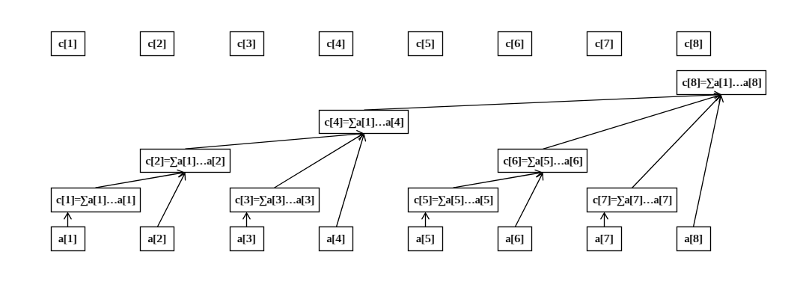
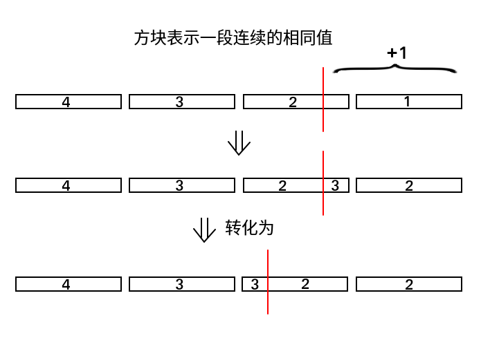

键入以搜索…
匹配算法：把输入按空格拆分，单独匹配每一段输入（不区分大小写，仅匹配文章文本内容），输出取或后的结果。
模糊搜索似乎很难搞，目前没有相关打算。
键入以搜索…
匹配算法：把输入按空格拆分，单独匹配每一段输入（不区分大小写，仅匹配文章文本内容），输出取或后的结果。
模糊搜索似乎很难搞，目前没有相关打算。
我有一个朋友今天才会树状数组（存疑）
因为到了今天还是不会
树状数组本身是一个多叉树结构。每个点 \(i\) 上保存 \([i-\text{lowbit}(i)+1,i]\) 的和，并指向若干个更小的子区间（彼此不重，且拼起来是自身）

修改 \(x\)：从包含 \(x\) 的最低点（id 为 \(x\) 且右端点为 \(x\)）一直向上修改包含 \(x\) 的区间。
查询 \([1, x]\)：从右端点为 \(x\) 的区间（id 为 \(x\)）出发，不断找到前方紧邻的区间（\(id\) 差为 lowbit），累加进答案。
考虑沿用差分的方法实现区间修改。考虑数学推导表达区间前缀和。
已知 \(d_i=a_i-a_{i-1}\)，则：
\[ \begin{aligned} \sum\limits_{i=1}^x a_i=&\sum\limits_{i=1}^x\sum_{j=1}^i d_j\\ =&\sum\limits_{i=1}^x d_i\cdot (x-i+1)\\ =&(x+1)\cdot \left(\sum\limits_{i=1}^x d_i\right) - \left(\sum\limits_{i=1}^x i\cdot d_i\right) \end{aligned} \]
故只需要在黑盒中维护 \(d_i\) 和 \(i\cdot d_i\) 的单点修改即可。
在实现时感到违和：对 \([l, r]\) 做区间修改时，对于 \(l\) 处的 \(i\cdot d_i\) 作出了 \(l\cdot \Delta\) 的修改，为何在 \(r+1\) 处作 \((r + 1)\cdot \Delta\) 的修改（而非也是 \(l\cdot \Delta\)？）
事实上，对于 \(i\cdot d_i\) 的修改是对 \(d_i\) 修改的字面反映，这个量本身并没有具体的含义。
感觉有点唐唐的，也就只有我会有这种疑惑了……
维护 \(a_i\) 的区间加、\(a_i\) 的区间和查询、\(i\cdot a_i\) 的区间和查询。
令 \(d_i=a_i-a_{i-1}\)，考虑变形：
\[ \begin{aligned} \sum\limits_{i=1}^x i\cdot a_i=&\sum\limits_{i=1}^xi\cdot \sum_{j=1}^i d_j\\ =&\sum\limits_{i=1}^x d_i\cdot \left(i+(i+1)+\cdots +x\right)\\ =&\sum\limits_{i=1}^x d_i\cdot \dfrac {(x+i)\cdot (x-i+1)}2\\ =&\sum\limits_{i=1}^x d_i\cdot \dfrac {x^2+x-i^2+i}2\\ =&\dfrac{(x^2+x)\cdot \left(\sum\limits_{i=1}^x d_i\right) + \left(\sum\limits_{i=1}^x i\cdot d_i\right) - \left(\sum\limits_{i=1}^x i^2\cdot d_i\right)}2 \end{aligned} \]
故只需要在黑盒中维护 \(d_i\)、\(i\cdot d_i\) 和 \(i^2\cdot d_i\) 的单点修改即可。
见 相互抵消。
定义 \(\text{lowbit}_K(x)\) 为 \(x\) 在 \(K\) 进制下最低非零位的值。有一个异或和树状数组，把原本代码中的 \(\text{lowbit}_2(x)\) 全部替换为 \(\text{lowbit}_K(x)\)，得到一个正确性和复杂度均错误的『树状数组』，现在给定若干次
add和ask操作，你需要输出错误的代码运行的结果。\(m\le 2\times 10^5\)。
需要意识到并不是真的要用树状数组模拟这个操作，一边转化一边要想办法把这个错误代码用正常 DS 的操作表述出来。
add
的本质是对于非零最低位乘二并进位。手玩可以发现，有的时候『非零最低位』的位置是不变的，有的时候『非零最低位』变成
\(0\) 了，就会前移。
这显然是个 \(x\to 2x\bmod K\) 的内向基环树森林，且当存在自环 \(0\) 时，一个树中的最大跳跃次数为 \(\log_2K\)。
故这个时候（即 \(x\) 包含了『\(K\) 除了 \(2\) 之外的因子』时 ）暴力跳即可。对于每一位都这么跳是可以接受的。
\(0\) 不在树中，最终会有一个循环节。不妨把经过的所有点拉出来成为一条链。
这个时候可以停下来想一想题目给的两个操作是在做什么。显然每个叶子会引导一条无限长的链，则
add 就是给这个链做了一个后缀加（\(N\) 的限制是没影响的），ask
则是问了 log 个点值。
则如果这个链真的可以被处理出来，只需要 bit 维护差分即可。
考虑倍增预处理 \(f(i,j)\) 表示 \(i\) 走了 \(2^j\) 步后到的点，模拟跳 \(0\)、倍增跳循环节即可。
更偏数据结构技巧了，也重新回到结构上面。
对标线段树上二分，缺陷在于能维护的数据限制很大，优势在于常数很小。在出题人刻意只放树状数组过，或者树套树外层为树状数组的时候用处比较明显。
https://www.luogu.com.cn/problem/P6619
给定初始为空的二元组数组 \(A, B\)。对于阈值 \(k\)，令 \(s_A\) 表示 \(A\) 中关键字一 \(\le k\) 的元素关键字二之和，\(s_B\) 表示 \(B\) 中关键字一 \(\ge k\) 的元素关键字二之和。
维护若干次 \(A,B\) 的加点、删点操作，每次操作后输出：
- 自由选取 \(k\)，求 \(\min\{s_A,s_B\}\) 的最大值。
\(m\le 2\times 10^6\)，\(V\le 10^9\)。
不妨考虑固定状态下的询问。容易想到将 \(A,B\) 按关键字一升序排序。随着 \(k\) 的增大，\(s_A\) 是 \(A\) 关键字二的前缀和，\(s_B\) 是 \(B\) 关键字二的后缀和。
我并不会三分，但题解说因为有平台所以三分做不了。
但由于最高点同时是交点，可以二分找到最值点。离散化元素后维护此处的前缀和即可。
容易想到线段树上二分，然而常数太大难以通过。
如果改用树状数组呢？树状数组有办法进行类似线段树上二分的操作吗？
事实上，bit 的结构更适合倍增。其出发点和线段树上二分是相同的，在于规避重复询问。
假设当前在一个合法位置 \(p\)，已经累加到 \(s\)，要验证 \(p+2^k\)（\(\text{lowbit}(p+2^k)=2^k\)）是否仍然合法，仅需 check \(s+c_{p+2^k}\) 是否合法（结合树状数组结构想一想）。
其实 Peace 是有点难判的…… 我写了个结构题维护了数量用来判断。
#include <bits/stdc++.h>
int main() {
#ifdef ONLINE_JUDGE
std::ios::sync_with_stdio(false);
std::cin.tie(nullptr), std::cout.tie(nullptr);
#else
std::freopen(".in", "r", stdin);
std::freopen(".out", "w", stdout);
const auto stime = std::chrono::steady_clock::now();
#endif
int m;
std::cin >> m;
struct query { int op, k, x, y; };
std::vector<query> a(m + 1);
std::vector<int> l(1);
for (int i = 1; i <= m; ++i) {
std::cin >> a[i].op >> a[i].k;
if (a[i].op == 1) {
std::cin >> a[i].x >> a[i].y;
l.push_back(a[i].x);
}
else {
int k = a[i].k;
a[i].op = -1;
a[i].k = a[k].k, a[i].x = a[k].x, a[i].y = a[k].y;
}
}
std::sort(l.begin() + 1, l.end());
l.erase(std::unique(l.begin() + 1, l.end()), l.end());
int n = (int)l.size();
std::vector<int> cnt(2);
std::vector<long long> sum(2);
struct node {
int c;
long long v;
node(void): c(0), v(0ll) {}
node(int c1, long long v1): c(c1), v(v1) {}
node operator+ (const node &q) const {
return node(c + q.c, v + q.v);
}
node operator- (const node &q) const {
return node(c - q.c, v - q.v);
}
node& operator+= (const node q) {
return *this = *this + q;
}
node &operator-= (const node &q) {
return *this = *this - q;
}
};
std::vector<std::vector<node> > bit(2, std::vector<node> (n + 1)), s(2, std::vector<node> (n + 1));
auto lowbit = [&](int x) { return x & -x; };
for (int i = 1; i <= m; ++i) {
a[i].x = std::lower_bound(l.begin() + 1, l.end(), a[i].x) - l.begin() + a[i].k;
cnt[a[i].k] += a[i].op, sum[a[i].k] += a[i].op * a[i].y;
s[a[i].k][a[i].x] += node(a[i].op, a[i].op * a[i].y);
for (int j = a[i].x; j <= n; j += lowbit(j))
bit[a[i].k][j] += node(a[i].op, a[i].op * a[i].y);
if (std::min(cnt[0], cnt[1]) == 0)
std::cout << "Peace\n";
else {
int p = 0;
node s0(0, 0ll), s1(cnt[1], sum[1]);
for (int i = 20; ~i; --i)
if (p + (1 << i) <= n && (s0 + bit[0][p + (1 << i)]).v <= (s1 - bit[1][p + (1 << i)]).v)
p += (1 << i), s0 += bit[0][p], s1 -= bit[1][p];
if (p + 1 <= n && s1.c != s[1][p + 1].c && (s1 - s[1][p + 1]).v >= s0.v) {
s1 -= s[1][p + 1], s0 = node(cnt[1], sum[1]), p = 0;
for (int i = 20; ~i; --i)
if (p + (1 << i) <= n && (s0 - bit[1][p + (1 << i)]).v >= s1.v)
p += (1 << i), s0 -= bit[1][p];
std::cout << l[p] << ' ' << 2 * s1.v << '\n';
}
else if (s0.c)
std::cout << l[p] << ' ' << 2 * s0.v << '\n';
else
std::cout << "Peace\n";
}
}
#ifndef ONLINE_JUDGE
std::cerr << std::fixed << std::setprecision(6) << std::chrono::duration<double> (std::chrono::steady_clock::now() - stime).count() << "s\n";
#endif
return 0;
}https://www.luogu.com.cn/problem/P4647
需要意识到帆的顺序对答案没有影响，同一行帆的个数对答案有影响。
从这一点出发会有一个比较显然的贪心：把柱状图斜过来，把柱子按 \(h\) 从小到大排序，问题变为对于第 \(i\) 次操作，选 \(1\sim h_i\) 里最矮的几列使其高度 +1。
其实会有一些其他的贪心方法，比如我一开始想的是不排序，在 \(1\sim h_i\) 内，优先使最矮的高度 +1，高度相同的使编号更大的柱子高度 +1。这个的正确性也比较好证明，但是太复杂了，没什么好的优化。把贪心策略中的偏序关系提前到一次排序就会简单很多。
现在需要找到最矮的这几列。我会文艺平衡树
考虑更加天才的做法。如果我们需要用 bit，线段树这样的结构来维护操作，就会有一些问题： 为了快速修改，需要保证修改的元素是连续的。简单的方法是让元素有序地在 ds 中排列。但修改操作本身会破坏这样的偏序关系。
不妨假设元素降序排列（和后方的 0 衔接），那么需要把 \([h-k+1,h]\) 这段元素 +1，但这会造成部分元素的前移，考虑前移的过程到底发生了什么。
考虑这样的场景：

由于 delta 为 1，至多只会有一段数发生这样的前移。先 ask 一下 \(h-k+1\) 处的值，假设这一段的左右端点为 \([l,r]\)，只需要修改 \([l,l+(r-(h-k+1))]\) 和 \([r+1,h]\) 两段区间即可。
\([l,r]\) 是可以通过 bit 上倍增求出的。复杂度 \(O(n\log n)\)。
https://www.luogu.com.cn/problem/AT_abc392_f
https://www.becoder.com.cn/contest/6620/problem/4
见 树套树。